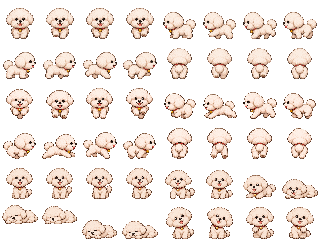

Lucky · 小屋里的新伙伴
游戏内点击 Lucky，或点右侧「与 Lucky 互动」，可以跟随马硕／门都、抚摸、抱起、放下、玩球、喂食和回窝睡觉。发起双人互动时 Lucky 会先让到旁边，方向键继续控制马硕。
四方向动画
下 · 正面左右上 · 背面
姿态动画
单帧 40×40、脚底中点锚定，共 48 帧；四向待机使用各方向的静止参考帧，行走与奔跑各有独立的四帧循环。动作页直接播放实际游戏图集。
真实游戏连续演示
实际游戏画面
实际图集

素材为依据所提供设计图特征重新制作的原创 AI 辅助图集，没有裁切设计板。当前工作区未找到 Lucky 原始照片，尚未完成逐帧照片相似度核验。抱起和抚摸采用原人物姿态与宠物动作的组合，后续可补绘专用手臂帧。截图与录像来自真实 Phaser 场景，采用 1194×834、DPR 2 的 Chromium 触控模拟。真实 iPad Safari 横屏、手势及设备帧率仍需人工验收。